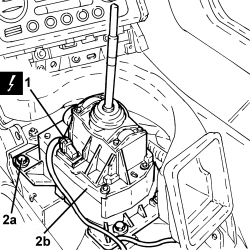

2127A70 SUPPORT FOR CONTROL LEVER FOR MANUAL GEARBOX WITH HYDRAULIC SELECTION AND HANDBRAKE - R.R.
- Path
- Procedures > 21 GEARBOX UNIT > 2127 ELECTRO-HYDRAULIC SELECTION GEARBOX EXTERNAL CONTROLS > 2127A ELECTRO-HYDRAULIC GEARBOX EXTERNAL CONTROL > 2127A70 SUPPORT FOR CONTROL LEVER FOR MANUAL GEARBOX WITH HYDRAULIC SELECTION AND HANDBRAKE - R.R.
- Kind
- repair procedure (removal / refitting; the operation number is the code)
- Applies to
- engines: 2.2 JTS; all production periods
- Interactive page
- https://sloeber94.github.io/elrnDB-aBrrSpdr/en/#/946004297
Applies to: engines: 2.2 JTS; all production periods
 Removing
Removing
 Refitting
RefittingOp. 7045A10 FRONT SEAT (ONE), LEFT OR RIGHT - R.R.
Op. 7040L37 GEAR LEVER TRIM - R.R
Op. 3380A44 HANDBRAKE/LINKAGE PROTECTION - R+R
Op. 7040L20 TUNNEL COVER - R.R
Applies to: engines: 2.2 JTS; all production periods
1. Disconnect the electrical connection for the gear control unit.
Description | Connector | |
|---|---|---|
1 | Gear controls |
2. Undo the bolts (2a) and remove the electro-hydraulic selection gearbox manual control lever support (2b).

Applies to: engines: 2.2 JTS; all production periods
Refitting
Removing- Place the electro-hydraulic selection manual gear control lever support in position and tighten the bolts to the recommended torque.
Component | Fastening | dia | Value (daNm) | Validity |
|---|---|---|---|---|
Gearbox manual control lever support | Bolt | M6 | 0.7 ÷ 1.1 | 2.2 JTS |
- Connect the electrical connection for the gear control unit.
Op. 7040L74 TUNNEL TRIM MOUNTING BRACKET/SUPPORT - R.R.
Op. 7040A65 CONSOLE SIDE CLOSING (ONE) - R.R.
Op. 7040L20 TUNNEL COVER - R.R
Op. 3380A44 HANDBRAKE/LINKAGE PROTECTION - R+R
Topics linked from this page (7)
- 3380A44 HANDBRAKE/LINKAGE PROTECTION - R+R
- 7040A65 CONSOLE SIDE CLOSING (ONE) - R.R.
- 7040L20 TUNNEL COVER - R.R
- 7040L37 GEAR LEVER TRIM - R.R
- 7040L74 TUNNEL TRIM MOUNTING BRACKET/SUPPORT - R.R.
- 7045A10 FRONT SEAT (ONE), LEFT OR RIGHT - R.R.
- H037 GEAR CONTROLS